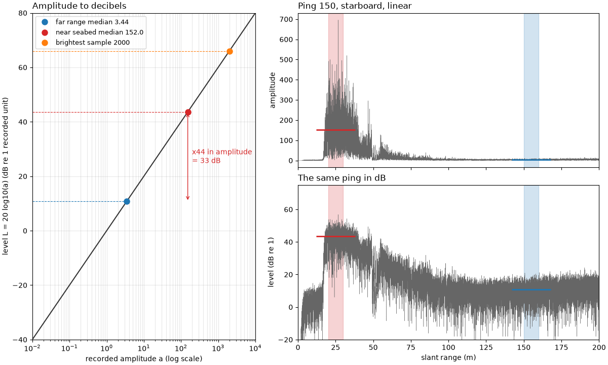
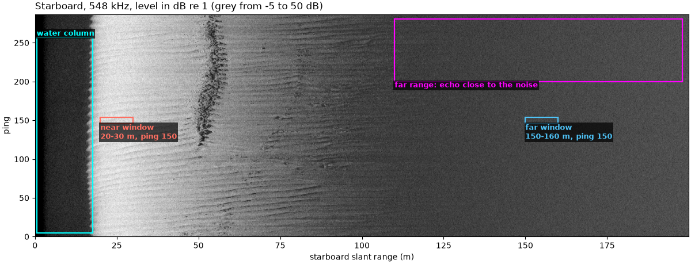
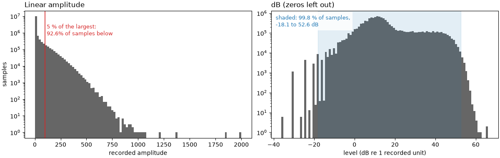
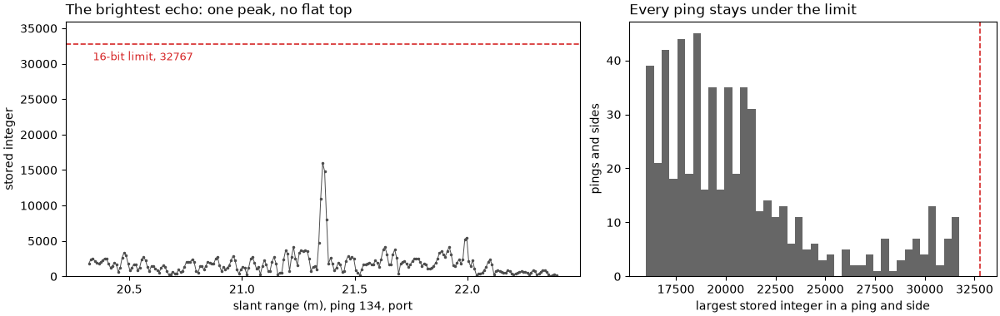
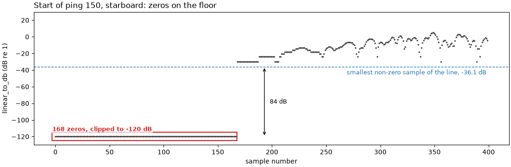
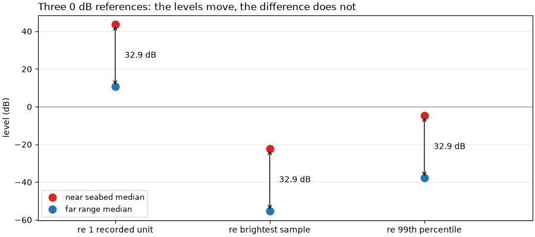
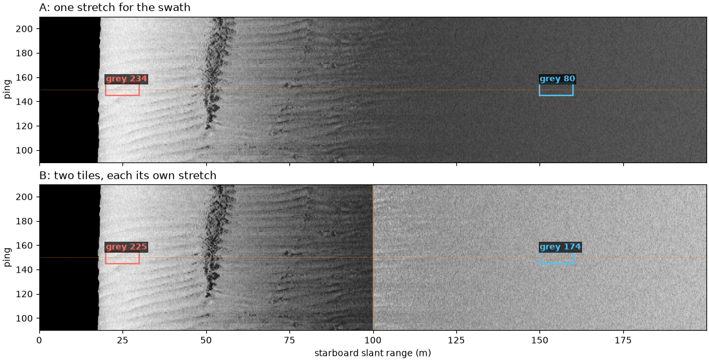

Note
Go to the end to download the full example code.
Echo amplitude and decibels#

A sidescan file holds numbers, one per sample, that rise and fall with the echo. They are relative: the receiver amplifies the transducer’s voltage and a digitizer turns it into integers, so each number is proportional to the echo’s voltage at that point in the receiver. Nothing in the file ties those numbers to sound pressure in micropascals; that needs a calibration of the transducer and receiver, which ordinary surveys do not carry. Only ratios between samples mean something.
Ratios are best read in decibels. The echo amplitude a is a
pressure-like quantity, so its level in dB is
with a_0 the reference amplitude that is called 0 dB. (Power and
intensity go as amplitude squared, which is why they use
10 log10; both give the same dB for the same echo.) A ratio of 10 in
amplitude is 20 dB, a ratio of 2 is 6 dB, and the difference between
two levels does not depend on a_0:
Echoes span a huge range, from the bright first return to the noise at far range. On a linear scale everything beyond the first tens of meters is squashed against zero; in dB each factor of 10 gets the same space.
Three practical points follow:
The 0 dB reference is a choice. Common ones are one recorded unit, the largest sample, or a high percentile. Each shifts every level by the same amount and leaves differences unchanged.
Zero has no dB value.
log10(0)is minus infinity, so zeros (blanked samples, dropouts) are clipped to a small positive value first. sidescanpy clips at1e-6, which is -120 dB.An 8-bit image is not dB. Turning levels into 256 grey values needs a stretch (which levels map to black and white) and often a gamma. If those are not recorded, the grey values cannot be turned back into dB.
Data: JNCC Wight-Barfleur Reef, EdgeTech JSF, Open Government Licence v3.0 (see Example data).
Usage: python examples/theory/plot_amplitude_and_db.py [output_dir]
# 2026 rshomberg@uri.edu
import sys
from pathlib import Path
import matplotlib.pyplot as plt
import numpy as np
from matplotlib.patches import Rectangle
from sidescanpy import analysis, datasets
from sidescanpy.core.units import FLOOR_DB, MIN_LINEAR, linear_to_db
from sidescanpy.export.image import to_uint8
from sidescanpy.export.windows.levels import with_db_var
from sidescanpy.io import read_and_convert
from sidescanpy.log import configure_logging
from sidescanpy.processing import altitude_from_bottom_track, compute_geometric_ranges
from sidescanpy.processing.radiometric import center_frequency_hz
out = Path(sys.argv[1]) if len(sys.argv) > 1 else Path(".")
out.mkdir(parents=True, exist_ok=True)
# The JSF file records no sound velocity; ranges use 1500 m/s.
configure_logging("ERROR")
The line#
The high frequency of a line over Wight-Barfleur Reef, as recorded:
a chirp from 521 to 574 kHz with its center at 548 kHz (sidescanpy
names it by the start of the sweep, hz_521000); titles below use
the center frequency. The first ping is incomplete and is dropped. The JSF format stores
each ping as 16-bit integers with one scale factor 2^-N per ping
and side (block floating point); the reader applies the scale, so the
values below are in the recorder’s units, not counts of one fixed size.
survey = read_and_convert([datasets.fetch("jncc_wight_barfleur_20130321174522.jsf")], fmt="jsf")
high = survey.frequencies[-1]
ds = survey.get_frequency(high).dataset.load()
ds = ds.isel(ping=np.isfinite(ds["backscatter_intensity"].values).all(axis=(1, 2)))
ds = with_db_var(compute_geometric_ranges(altitude_from_bottom_track(ds)))
amp = ds["backscatter_intensity"].values # (ping, side, sample), as recorded
first_return = analysis.analyze_nadir(ds).first_bottom_return_sample
f_khz = center_frequency_hz(ds) / 1e3
print(f"{high}: chirp {ds.attrs['freq_hz_start'] / 1e3:.0f} to {ds.attrs['freq_hz_end'] / 1e3:.0f} kHz, center "
f"{f_khz:.1f} kHz; {ds.sizes['ping']} pings, {ds.sizes['sample']} samples per side")
NEAR_COLOUR, FAR_COLOUR = "#ff6f61", "#4fc3f7" # bright enough to read on a grey image
def label_box(ax, x0, x1, y0, y1, text, colour="cyan", where="above", fontsize=9, bg="black"):
"""Outline a feature with a rectangle and name it."""
ax.add_patch(Rectangle((x0, y0), x1 - x0, y1 - y0, fill=False, ec=colour, lw=1.6))
y = y1 if where == "above" else y0
ax.text(x0, y, text, color=colour, fontsize=fontsize, fontweight="bold",
va="bottom" if where == "above" else "top", ha="left",
bbox=dict(boxstyle="square,pad=0.15", fc=bg, ec="none", alpha=0.7))
hz_521000: chirp 521 to 574 kHz, center 547.5 kHz; 287 pings, 23140 samples per side
Near seabed and far range in one ping#
Ping 150, starboard. The median sample between 20 and 30 m of slant range (just past the first seabed echo) against the median between 150 and 160 m (far range, close to the noise). The figure shows the two windows on the starboard waterfall (boxed around ping 150); the last figure on this page shows the ping itself.
PING, SIDE = 150, 1
slant = ds["slant_range_m"].values[PING, SIDE]
row = amp[PING, SIDE]
NEAR, FAR = (20.0, 30.0), (150.0, 160.0)
def window(r0, r1):
return (slant >= r0) & (slant < r1)
near = float(np.median(row[window(*NEAR)]))
far = float(np.median(row[window(*FAR)]))
ratio = near / far
print(f"median near the seabed ({NEAR[0]:.0f}-{NEAR[1]:.0f} m): {near:.2f}; "
f"at far range ({FAR[0]:.0f}-{FAR[1]:.0f} m): {far:.3f}")
print(f"ratio {near:.2f} / {far:.3f} = {ratio:.1f} in amplitude = 20 log10({ratio:.1f}) = "
f"{20 * np.log10(ratio):.1f} dB")
print(f"for comparison, power (amplitude squared) ratio {ratio ** 2:.0f} = 10 log10({ratio ** 2:.0f}) = "
f"{10 * np.log10(ratio ** 2):.1f} dB")
starboard_db = ds["backscatter_db"].values[:, SIDE]
fig, ax = plt.subplots(figsize=(12, 4.6), constrained_layout=True)
ax.imshow(starboard_db, cmap="gray", vmin=-5, vmax=50, origin="lower", aspect="auto",
extent=[slant[0], slant[-1], 0, ds.sizes["ping"]])
fb_m = slant[int(np.nanmedian(first_return[:, SIDE]))]
label_box(ax, 0.5, fb_m - 0.5, 5, ds.sizes["ping"] - 30, "water column", colour="cyan")
label_box(ax, NEAR[0], NEAR[1], PING - 4, PING + 4, f"near window\n{NEAR[0]:.0f}-{NEAR[1]:.0f} m, ping {PING}",
colour=NEAR_COLOUR, where="below")
label_box(ax, FAR[0], FAR[1], PING - 4, PING + 4, f"far window\n{FAR[0]:.0f}-{FAR[1]:.0f} m, ping {PING}",
colour=FAR_COLOUR, where="below")
label_box(ax, 110, 198, 200, ds.sizes["ping"] - 6, "far range: echo close to the noise", colour="magenta",
where="below")
ax.set_xlabel("starboard slant range (m)")
ax.set_ylabel("ping")
ax.set_title(f"Starboard, {f_khz:.0f} kHz, level in dB re 1 (grey from -5 to 50 dB)", loc="left")
fig.savefig(out / "amplitude_and_db_windows.png", dpi=150)

median near the seabed (20-30 m): 152.00; at far range (150-160 m): 3.438
ratio 152.00 / 3.438 = 44.2 in amplitude = 20 log10(44.2) = 32.9 dB
for comparison, power (amplitude squared) ratio 1955 = 10 log10(1955) = 32.9 dB
The whole line: linear and dB histograms#
All seabed samples of the line (from the first seabed echo out), both sides. On a linear axis most samples fall in the first bin or two; in dB they spread over the whole range.
sample = ds["sample"].values
seabed = sample[None, None, :] >= first_return[:, :, None]
values = amp[seabed & np.isfinite(amp)]
levels = linear_to_db(values)
print(f"{values.size} seabed samples; median {np.median(values):.2f}, 99th percentile "
f"{np.percentile(values, 99):.0f}, largest {values.max():.0f}")
print(f"share of seabed samples below 5 % of the largest: {np.mean(values < 0.05 * values.max()):.1%}")
lo_db, hi_db = np.percentile(levels[levels > FLOOR_DB], [0.1, 99.9])
print(f"in dB, 99.8 % of the non-zero seabed samples lie between {lo_db:.1f} and {hi_db:.1f} dB re 1")
fig, (ax_lin, ax_db) = plt.subplots(1, 2, figsize=(12, 3.8), constrained_layout=True)
ax_lin.hist(values, bins=100, color="0.4")
ax_lin.axvline(0.05 * values.max(), color="C3", lw=1.2)
ax_lin.text(0.05 * values.max() * 1.15, 0.9, f"5 % of the largest:\n{np.mean(values < 0.05 * values.max()):.1%} "
"of samples below", color="C3", fontsize=9, va="top", transform=ax_lin.get_xaxis_transform())
ax_lin.set_xlabel("recorded amplitude")
ax_lin.set_ylabel("samples")
ax_lin.set_yscale("log")
ax_lin.set_title("Linear amplitude", loc="left")
ax_db.hist(levels[levels > FLOOR_DB], bins=100, color="0.4")
ax_db.axvspan(lo_db, hi_db, color="C0", alpha=0.12)
ax_db.text(0.02, 0.97, f"shaded: 99.8 % of samples,\n{lo_db:.1f} to {hi_db:.1f} dB", color="C0", fontsize=9,
va="top", transform=ax_db.transAxes, bbox=dict(fc="white", ec="none", alpha=0.85))
ax_db.set_xlabel("level (dB re 1 recorded unit)")
ax_db.set_yscale("log")
ax_db.set_title("dB (zeros left out)", loc="left")
fig.savefig(out / "amplitude_and_db_histograms.png", dpi=150)

12090460 seabed samples; median 4.25, 99th percentile 264, largest 2000
share of seabed samples below 5 % of the largest: 92.6%
in dB, 99.8 % of the non-zero seabed samples lie between -18.1 and 52.6 dB re 1
The brightest echo and the top of the scale#
If the receiver or digitizer saturates, the brightest echoes all hit the same top value and sit there for several samples (a flat top). Here each ping and side has its own scale factor, so the test is on the stored integers: the smallest step between values in a ping is one integer unit, and the ping’s largest value divided by that step is its largest stored integer. A signed 16-bit integer stops at 32767.
brightest = float(np.nanmax(amp))
where = np.unravel_index(int(np.nanargmax(amp)), amp.shape)
top_counts, repeats = [], []
for p in range(amp.shape[0]):
for s in range(2):
v = amp[p, s]
step = np.min(np.diff(np.unique(v)))
top_counts.append(v.max() / step)
repeats.append(int(np.sum(v == v.max())))
top_counts, repeats = np.array(top_counts), np.array(repeats)
print(f"brightest sample: {brightest:.0f} = {20 * np.log10(brightest):.1f} dB re 1, ping {where[0]}, "
f"{['port', 'starboard'][where[1]]}, slant range {ds['slant_range_m'].values[where]:.1f} m")
print(f"largest stored integer in any ping: {top_counts.max():.0f} of 32767; median ping maximum "
f"{np.median(top_counts):.0f}")
print(f"the ping maximum occurs once in {np.mean(repeats == 1):.0%} of pings and sides, "
f"at most {repeats.max()} times")
brightest sample: 2000 = 66.0 dB re 1, ping 134, port, slant range 21.4 m
largest stored integer in any ping: 31744 of 32767; median ping maximum 19712
the ping maximum occurs once in 95% of pings and sides, at most 3 times
Left: the stored integers around the brightest sample of the line. A saturated echo would run flat along the 16-bit limit; this one peaks once and falls away. Right: the largest stored integer of every ping and side, all below the limit.
bp, bs, bi = where
bv = amp[bp, bs]
b_step = np.min(np.diff(np.unique(bv)))
around = slice(bi - 120, bi + 121)
fig, (ax_pk, ax_top) = plt.subplots(1, 2, figsize=(12, 3.8), width_ratios=[1.4, 1], constrained_layout=True)
ax_pk.plot(ds["slant_range_m"].values[bp, bs, around], bv[around] / b_step, ".-", color="0.3", ms=3, lw=0.7)
ax_pk.axhline(32767, color="C3", lw=1.2, ls="--")
ax_pk.text(ds["slant_range_m"].values[bp, bs, bi - 118], 32767 * 0.97, "16-bit limit, 32767", color="C3",
fontsize=9, va="top")
ax_pk.set_ylim(0, 36000)
ax_pk.set_xlabel(f"slant range (m), ping {bp}, {['port', 'starboard'][bs]}")
ax_pk.set_ylabel("stored integer")
ax_pk.set_title("The brightest echo: one peak, no flat top", loc="left")
ax_top.hist(top_counts, bins=40, color="0.4")
ax_top.axvline(32767, color="C3", lw=1.2, ls="--")
ax_top.set_xlabel("largest stored integer in a ping and side")
ax_top.set_ylabel("pings and sides")
ax_top.set_title("Every ping stays under the limit", loc="left")
fig.savefig(out / "amplitude_and_db_clipping.png", dpi=150)

Zeros and the dB floor#
Some samples are exactly zero: the first samples of every ping, while
the receiver is off during transmit. Their logarithm is minus
infinity, which breaks any mean or plot. sidescanpy’s
linear_to_db() clips the amplitude at
1e-6 first, so a zero becomes -120 dB, far below any real sample.
with_db_var() uses it to add a
backscatter_db variable, and
apply_tvg() uses the same step before it
adds gain, so its output is in dB too.
zeros = int(np.sum(amp == 0))
smallest = float(np.min(amp[amp > 0]))
with np.errstate(divide="ignore"):
print(f"20 log10(0) = {20 * np.log10(0.0)}; linear_to_db(0) = {float(linear_to_db(0.0)):.0f} dB "
f"(clip at {MIN_LINEAR:g})")
print(f"{zeros} zero samples ({zeros / amp.size:.2%} of the line); smallest non-zero sample {smallest:.4f} "
f"= {20 * np.log10(smallest):.1f} dB re 1")
20 log10(0) = -inf; linear_to_db(0) = -120 dB (clip at 1e-06)
102288 zero samples (0.77% of the line); smallest non-zero sample 0.0156 = -36.1 dB re 1
The figure shows the first 400 samples of ping 150, starboard, after
linear_to_db(): the leading zeros sit on
the -120 dB floor, far below the smallest real sample of the line.
head = linear_to_db(row[:400])
n_lead = int(np.argmax(row > 0))
fig, ax = plt.subplots(figsize=(11, 3.6), constrained_layout=True)
ax.plot(np.arange(400), head, ".", color="0.3", ms=3)
ax.axhline(20 * np.log10(smallest), color="C0", lw=1, ls="--")
ax.text(398, 20 * np.log10(smallest) - 3, f"smallest non-zero sample of the line, {20 * np.log10(smallest):.1f} dB",
color="C0", fontsize=9, ha="right", va="top")
label_box(ax, -3, n_lead - 0.5, FLOOR_DB - 5, FLOOR_DB + 5, f"{n_lead} zeros, clipped to {FLOOR_DB:.0f} dB",
colour="C3", bg="white")
ax.annotate("", (n_lead + 25, FLOOR_DB), (n_lead + 25, 20 * np.log10(smallest)),
arrowprops=dict(arrowstyle="<->", color="k"))
ax.text(n_lead + 30, (FLOOR_DB + 20 * np.log10(smallest)) / 2,
f"{20 * np.log10(smallest) - FLOOR_DB:.0f} dB", fontsize=9, va="center")
ax.set_ylim(FLOOR_DB - 10, 30)
ax.set_xlabel("sample number")
ax.set_ylabel("linear_to_db (dB re 1)")
ax.set_title(f"Start of ping {PING}, starboard: zeros on the floor", loc="left")
fig.savefig(out / "amplitude_and_db_zeros.png", dpi=150)

Where 0 dB sits#
The same two medians against three references: one recorded unit, the brightest sample of the line, and the 99th percentile of the seabed samples. Every level moves; the difference stays.
references = {"1 recorded unit": 1.0, "brightest sample": brightest,
"99th percentile": float(np.percentile(values, 99))}
fig, ax = plt.subplots(figsize=(9, 4), constrained_layout=True)
for i, (name, a0) in enumerate(references.items()):
n_db, f_db = 20 * np.log10(near / a0), 20 * np.log10(far / a0)
print(f" re {name:16s} ({a0:7.1f}): near {n_db:6.1f} dB, far {f_db:6.1f} dB, difference {n_db - f_db:.1f} dB")
ax.plot(i, n_db, "o", color="C3", ms=9, label="near seabed median" if i == 0 else None)
ax.plot(i, f_db, "o", color="C0", ms=9, label="far range median" if i == 0 else None)
ax.annotate("", (i, n_db), (i, f_db), arrowprops=dict(arrowstyle="<->", color="k"))
ax.text(i + 0.06, (n_db + f_db) / 2, f"{n_db - f_db:.1f} dB", fontsize=10, va="center")
ax.axhline(0, color="0.5", lw=0.8)
ax.set_xticks(range(len(references)), labels=[f"re {name}" for name in references])
ax.set_xlim(-0.5, len(references) - 0.3)
ax.set_ylabel("level (dB)")
ax.set_title("Three 0 dB references: the levels move, the difference does not", loc="left")
ax.grid(alpha=0.3, axis="y")
ax.legend(loc="lower left", fontsize=9)
fig.savefig(out / "amplitude_and_db_reference.png", dpi=150)

re 1 recorded unit ( 1.0): near 43.6 dB, far 10.7 dB, difference 32.9 dB
re brightest sample ( 2000.0): near -22.4 dB, far -55.3 dB, difference 32.9 dB
re 99th percentile ( 264.0): near -4.8 dB, far -37.7 dB, difference 32.9 dB
What an 8-bit stretch keeps#
Image tiles for viewing or machine learning are usually 8-bit. Here
the same pings, in dB, go through
to_uint8() two ways:
A, one stretch for the whole swath (its 1st to 99th percentile to black and white);
B, the near half (0 to 100 m) and the far half (100 to 200 m) as two tiles, each stretched on its own percentiles, as a per-tile export does.
The near and far medians of ping 150 then become different grey values under A and under B, and under B the far range looks nearly as bright as the near range. Without the stretch limits, which a plain PNG does not carry, neither image says how many dB apart the two ranges were.
block = slice(PING - 60, PING + 60)
db_block = ds["backscatter_db"].values[block, SIDE].astype(np.float64)
db_block = np.where(sample[None, :] >= first_return[block, SIDE][:, None], db_block, np.nan)
img_a, meta_a = to_uint8(db_block)
half = int(np.searchsorted(slant, 100.0))
img_b_near, meta_b_near = to_uint8(db_block[:, :half])
img_b_far, meta_b_far = to_uint8(db_block[:, half:])
img_b = np.concatenate([img_b_near, img_b_far], axis=1)
row_in_block = PING - block.start
grey = {}
for name, img in (("A", img_a), ("B", img_b)):
grey[name] = (float(np.median(img[row_in_block, window(*NEAR)])),
float(np.median(img[row_in_block, window(*FAR)])))
print(f"stretch {name}: near median grey {grey[name][0]:.0f}, far median grey {grey[name][1]:.0f}")
print(f"stretch A maps {meta_a.p_min:.1f} to {meta_a.p_max:.1f} dB onto 0-255; stretch B maps "
f"{meta_b_near.p_min:.1f}-{meta_b_near.p_max:.1f} dB (near tile) and "
f"{meta_b_far.p_min:.1f}-{meta_b_far.p_max:.1f} dB (far tile)")
fig, axes = plt.subplots(2, 1, figsize=(11, 5.6), sharex=True, constrained_layout=True)
for ax, (name, img) in zip(axes, (("A: one stretch for the swath", img_a), ("B: two tiles, each its own stretch", img_b))):
ax.imshow(img, cmap="gray", vmin=0, vmax=255, origin="lower", aspect="auto",
extent=[slant[0], slant[-1], block.start, block.stop])
ax.axhline(PING, color="C1", lw=0.6, ls=":")
key = name[0]
for (r0, r1), g, colour in ((NEAR, grey[key][0], NEAR_COLOUR), (FAR, grey[key][1], FAR_COLOUR)):
label_box(ax, r0, r1, PING - 5, PING + 5, f"grey {g:.0f}", colour=colour)
ax.set_title(name, loc="left")
ax.set_ylabel("ping")
axes[1].axvline(100, color="C1", lw=1)
axes[1].set_xlabel("starboard slant range (m)")
fig.savefig(out / "amplitude_and_db_8bit.png", dpi=150)

stretch A: near median grey 234, far median grey 80
stretch B: near median grey 225, far median grey 174
stretch A maps -6.6 to 48.0 dB onto 0-255; stretch B maps -2.9-49.7 dB (near tile) and -8.5-19.6 dB (far tile)
Amplitude, dB and the ping together#
Left: the curve L = 20 log10(a) with the two measured medians and
the brightest sample on it, against a logarithmic amplitude axis.
Right: ping 150 on a linear scale (top) and in dB (bottom).
curve_a = np.logspace(-2, 4, 200)
fig = plt.figure(figsize=(12, 7.2), constrained_layout=True)
grid = fig.add_gridspec(2, 2, width_ratios=[1, 1.35])
ax_curve = fig.add_subplot(grid[:, 0])
ax_lin = fig.add_subplot(grid[0, 1])
ax_db = fig.add_subplot(grid[1, 1], sharex=ax_lin)
ax_curve.semilogx(curve_a, 20 * np.log10(curve_a), color="0.2")
for label, a, colour in ((f"far range median {far:.2f}", far, "C0"), (f"near seabed median {near:.1f}", near, "C3"),
(f"brightest sample {brightest:.0f}", brightest, "C1")):
ax_curve.plot(a, 20 * np.log10(a), "o", color=colour, ms=8, label=label)
ax_curve.hlines(20 * np.log10(a), 1e-2, a, color=colour, lw=0.8, ls="--")
ax_curve.annotate("", (near * 1.0, 20 * np.log10(near)), (near * 1.0, 20 * np.log10(far)),
arrowprops=dict(arrowstyle="<->", color="C3"))
ax_curve.text(near * 1.3, 10 * np.log10(near * far), f"x{ratio:.0f} in amplitude\n= {20 * np.log10(ratio):.0f} dB",
color="C3", fontsize=10, va="center")
ax_curve.set_xlabel("recorded amplitude a (log scale)")
ax_curve.set_ylabel("level L = 20 log10(a) (dB re 1 recorded unit)")
ax_curve.set_xlim(1e-2, 1e4)
ax_curve.set_ylim(-40, 80)
ax_curve.grid(alpha=0.3, which="both")
ax_curve.legend(loc="upper left", fontsize=9)
ax_curve.set_title("Amplitude to decibels", loc="left")
ax_lin.plot(slant, row, lw=0.3, color="0.4")
ax_db.plot(slant, ds["backscatter_db"].values[PING, SIDE], lw=0.3, color="0.4")
for ax, (n, f) in ((ax_lin, (near, far)), (ax_db, (20 * np.log10(near), 20 * np.log10(far)))):
for (r0, r1), level, colour in ((NEAR, n, "C3"), (FAR, f, "C0")):
ax.axvspan(r0, r1, color=colour, alpha=0.2)
ax.hlines(level, r0 - 8, r1 + 8, color=colour, lw=2)
ax_lin.set_ylabel("amplitude")
ax_lin.set_title(f"Ping {PING}, starboard, linear", loc="left")
ax_db.set_ylabel("level (dB re 1)")
ax_db.set_ylim(-20, 75)
ax_db.set_xlim(0, 200)
ax_db.set_xlabel("slant range (m)")
ax_db.set_title("The same ping in dB", loc="left")
plt.setp(ax_lin.get_xticklabels(), visible=False)
fig.savefig(out / "amplitude_and_db.png", dpi=150)
Reading the result#
Only ratios count. Near the seabed the median sample of ping 150 is
152.00 recorded units, at far range 3.438. Neither number is a sound
pressure; their ratio, 44.2, is a property of the echo: 32.9 dB. The
same 32.9 dB comes out of 10 log10 of the power ratio (1955), and
out of every 0 dB reference tried above (one unit, the brightest
sample, the 99th percentile), even though the levels themselves move
by tens of dB from one reference to the next. Quote a dB level only
with its reference.
Linear hides most of the image. 92.6 % of the seabed samples are below 5 % of the largest one, so a linear grey scale spends almost all its range on a few bright echoes. In dB, 99.8 % of the same samples lie between -18.1 and 52.6 dB re 1, spread across the whole axis, and the fade with range shows as a slope rather than a cliff.
No sign of clipping. The brightest sample is 2000 units (66.0 dB re 1), 21.4 m out on port in ping 134. No ping comes close to the 16-bit limit: the largest stored integer in any ping is 31744 of 32767, and the ping maximum occurs once in 95 % of pings and sides (at most 3 times), so there are no flat tops. That says the stored numbers were not saturated; it cannot rule out saturation earlier in the receiver, which the file does not record.
Zeros sit at the floor. 102288 samples (0.77 % of the line) are
exactly zero, mostly at the start of each ping. With 20 log10 they
would be minus infinity; linear_to_db()
puts them at -120 dB, 84 dB below the smallest real sample
(0.0156 units, -36.1 dB), so they are easy to find and mask
(mask_floor_db()).
8-bit loses the dB. One stretch for the swath maps -6.6 to 48.0 dB
onto 0 to 255: the near and far medians become grey 234 and 80. Two
tiles each stretched on their own give 225 and 174 for the same
samples. The 32.9 dB between them can be read back only from the
stretch limits, which to_uint8()
returns as ReversalMetadata but a
plain image file does not keep. Do level measurements on the dB data,
before export.
In sidescanpy: raw backscatter_intensity is linear amplitude, and
every conversion to dB is 20 log10 through
linear_to_db();
apply_tvg() returns dB.
How sidescan sees shows where these samples come from, and
How far a sidescan sees follows the far-range level into the noise.
Total running time of the script: (0 minutes 12.954 seconds)